CS184/284A Spring 2025 Homework 3-2 Write-Up
Link to webpage: https://cal-cs184-student.github.io/hw-webpages-z_hello_world/hw3-2/index.html
Link to GitHub repository: https://github.com/cal-cs184-student/sp25-exam-1-makeup-blissbk4096

Overview
In this homework, I implemented several components of a more complete path tracer. This included new materials for mirrors, glass and microfacet surfaces as well as environment maps and depth of field.The mirror material was quite simple. It mostly involved calculating the reflection of a vector. The glass material modeled Snell's law with Schlick's approximation to get reflection at shallower angles.
To get the microfacet material started, the distribution of normals and the fresnel had to be calculated. Then the sample function uniformly sampled the hemisphere of incoming radiance. This was very slow to converge, so the next step was to implement importance sampling. A good importance sampling PDF was provided along with the inverse of the CDF. The sample is generated with the inversion method using the inverse CDF. This made the images much cleaner.
The initial environment lighting implementation used linear pixel interpolation to lookup values in the map for any ray that escaped the geometry of the scene. The direct illumination and bounce illumination were seperated just like for the area light. This was very noisy for diffuse materials. To implement importance sampling for this, a 2D version of the inversion method was used. First use the inverse CDF for the vertical position in the whole image. Then use the CDF for that row (conditional on the vertical position). This created very good looking diffuse lighting with relatively few samples.
Finally, the depth of field effect used the thin-lens approximation to randomly generate rays from the set of rays that could reach a given point on the sensor.
Part 1. Mirror and Glass Materials
Show a sequence of six images of scene CBspheres.dae rendered with max_ray_depth set to 0, 1, 2, 3, 4, 5, and 100. The other settings should be at least 64 samples per pixel and 4 samples per light. Make sure to include all screenshots.
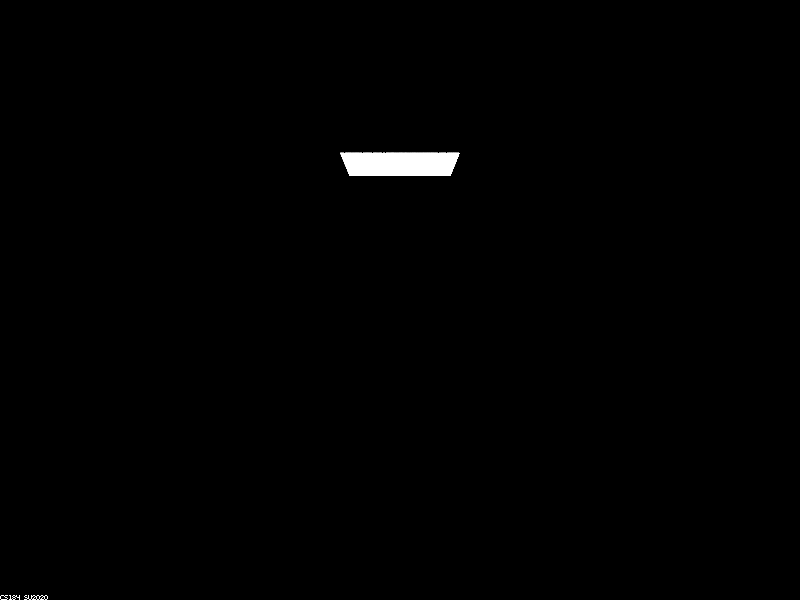
sky/CBspheres.dae 0 bounce |
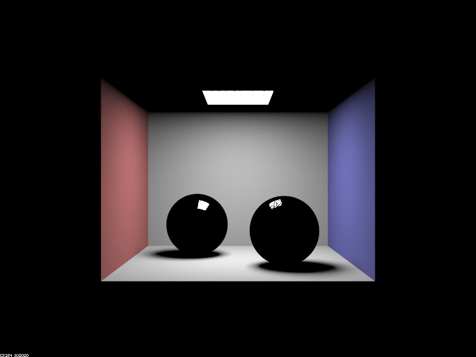
sky/CBspheres.dae 1 bounce |
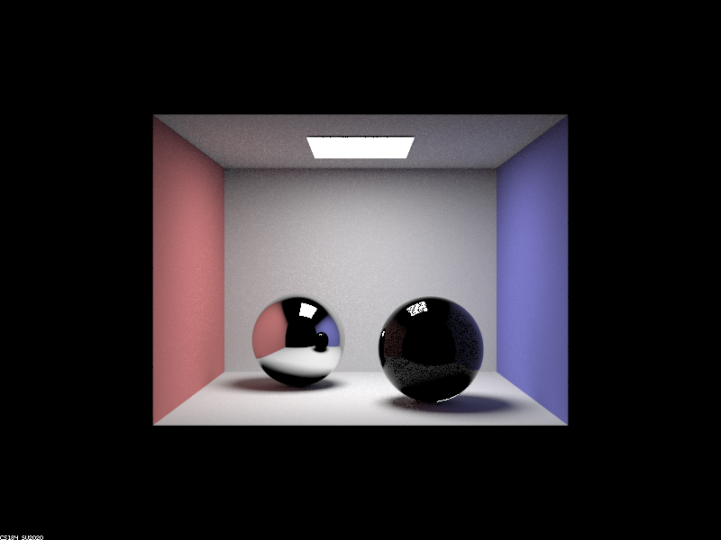
sky/CBspheres.dae 2 bounce |
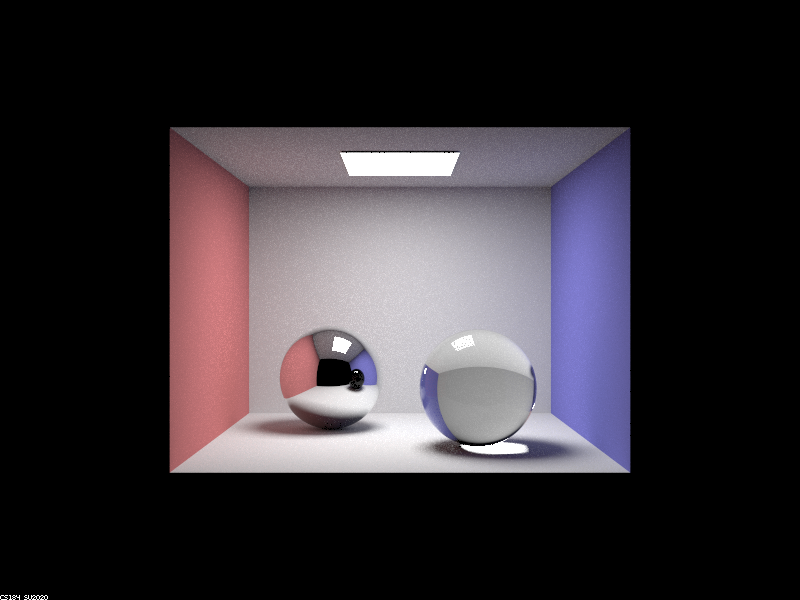
sky/CBspheres.dae 3 bounce |
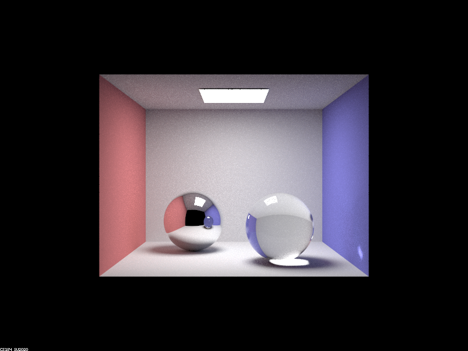
sky/CBspheres.dae 4 bounce |
sky/CBspheres.dae 5 bounce |
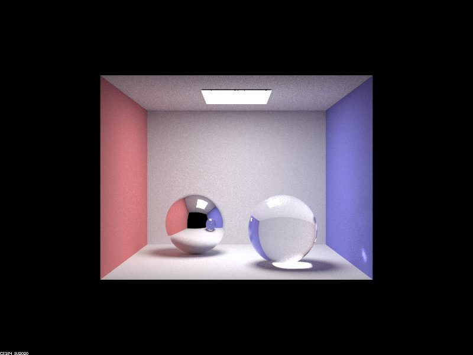
sky/CBspheres.dae 100 bounce |
Point out the new multibounce effects that appear in each image.
At zero bounces, there is only direct illumination, so only the area light is visible.
At one bounce, there is direct illumination. This just gets direct reflections from emitting objects, so you see diffuse illumination on the floor and walls, and the reflection of the area light in the spheres.
At two bounces, the scene is visible in the reflections on the spheres. The reflection in the spheres looks like the image from the one bounce illumination.
At three bounces, the image starts to look mostly correct. The ceiling is illuminated in the mirror reflections, and refraction of the walls throught the glass sphere is now visible. There is also a focusing effect of the light through the glass sphere.
At four bounces, there is a bright spot on the blue wall from more complex interactions. The refrective sphere looks correct in the reflection off of the mirror sphere.
At five bounces, the diffuse surfaces in the reflections and refractions look slightly more illuminated.
At one hundred bounces, the ceiling gets slightly more illumination, and the refractive sphere is brighter looking.
Explain how these bounce numbers relate to the particular effects that appear. Make sure to include all screenshots.
The area light is visible in the first image because the camera ray hits it directly. Everything else is black because at least one bounce is required to see anything that doesn't emit light.
At one bounce, the rays are able to reflect off of objects into the camera. This means that the diffuse materials that are not in shadow are visible to the camera. Also, the area light is reflected off of the mirror and glass materials.
At two bounces, the rays can escape shadowed diffuse areas to allow for ambient diffuse illumination. The reflected rays from the spheres are able to bounce one more time off of the walls and floor, so the scene is visible in the reflection.
At three bounces, the reflections off of the mirror have ambient lighting (most visible for the reflection of the ceiling) because rays can bounce off of the sphere, onto diffuse, onto diffuse, into light.
The light that passes through the glass sphere is also visible. This is because the ray can hit the sphere twice (enter and exit), hit a diffuse surface, and hit the light.
Refraction of the area light would have been visible at the previous step if the light was behind the glass sphere.
The refractive sphere is able to focus the light onto the diffuse surfaces: There is a bright spot under the glass sphere where the ray hit a diffuse surface then went straight throught the glass sphere to the light.
This appears to be acting like a magnifying glass focusing the sun.
At four bounces, the reflection of the refractive sphere works. This takes the same steps as the refraction from the camera, but bounces off the mirror sphere first.
The bright spot on the floor is reflecting off of the glass sphere, making it appear bright. There is also a bright spot on the blue wall. I believe this is the reflection of the light off of the mirror sphere, focused through the glass sphere onto the wall.
At five bounces, every diffuse surface looks slightly brighter. This is probably just more ways the light can bounce throught the scene. Another way to look at it is that the early ray termination bias is being reduced.
At one hundred bounces, the ceiling looks brighter. This is probably the same effect as five bounces, but greater. There is also a sheen off of the top of the glass sphere.
Part 2. Microfacet Material
|
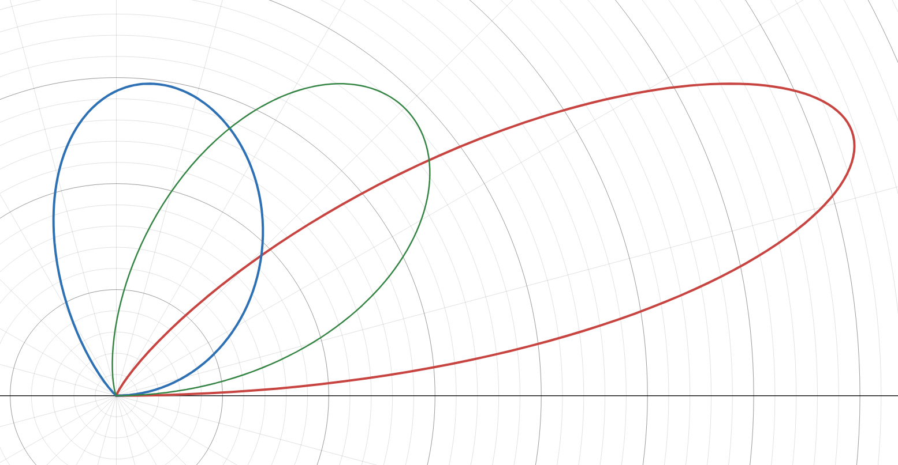
|
Show a screenshot sequence of 4 images of scene CBdragon_microfacet_au.dae rendered with \(\alpha\) set to 0.005, 0.05, 0.25 and 0.5. The other settings should be at least 128 samples per pixel and 1 samples per light. The number of bounces should be at least 5. Describe the differences between different images. Note that, to change the \(\alpha\), just open the .dae file and search for microfacet.
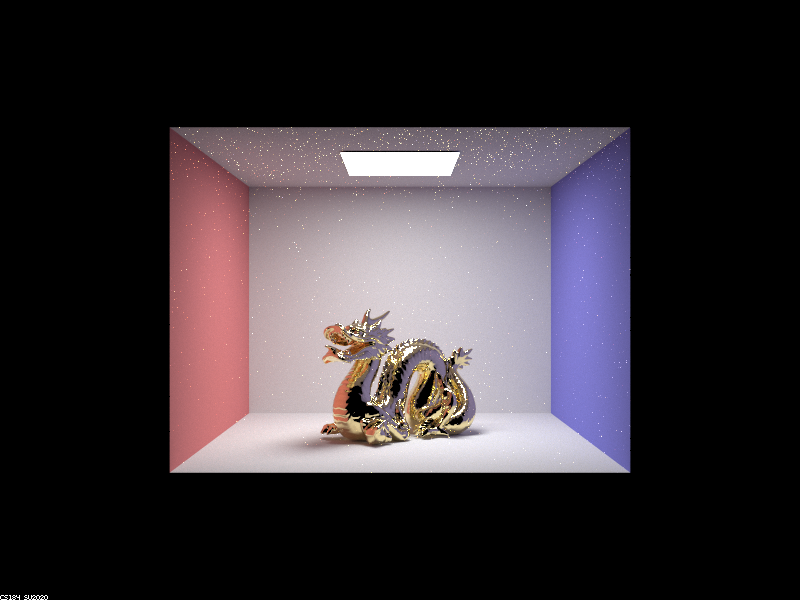
sky/CBdragon_microfacet_au.dae \(\alpha=0.005\) |
sky/CBdragon_microfacet_au.dae \(\alpha=0.05\) |
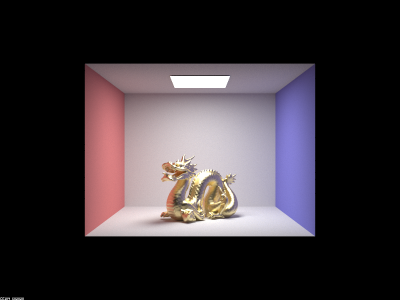
sky/CBdragon_microfacet_au.dae \(\alpha=0.25\) |
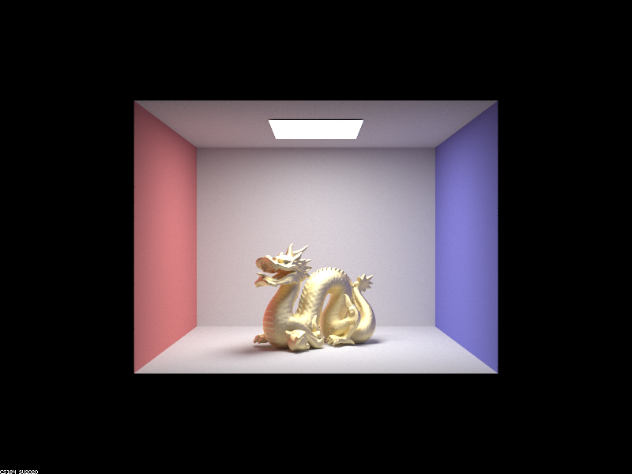
sky/CBdragon_microfacet_au.dae \(\alpha=0.5\) |
Show two images of scene CBbunny_microfacet_cu.dae rendered using cosine hemisphere sampling (default) and your importance sampling. The sampling rate should be fixed at 64 samples per pixel and 1 samples per light. The number of bounces should be at least 5. Briefly discuss their difference.
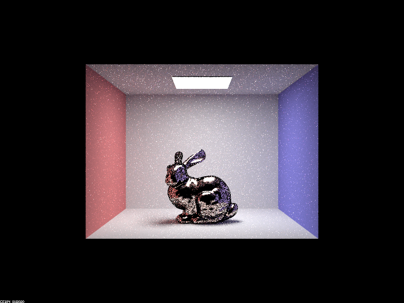
sky/CBbunny_microfacet_cu.dae uniform hemisphere sampling |
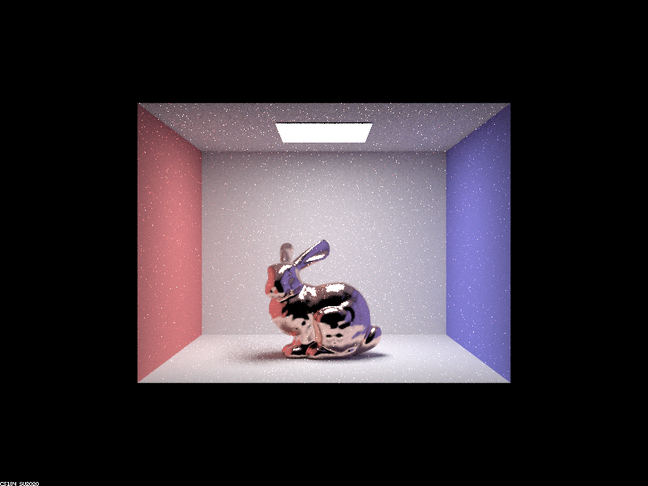
sky/CBbunny_microfacet_cu.dae importance sampling |
The importance sampled bunny looks much better. It is clearly a shiny material and has much cleaner specular bright areas. The noise on the walls and ceiling also appears to be less.
Show at least one image with some other conductor material, replacing eta and k. Note that you should look up values for real data rather than modifying them arbitrarily. Tell us what kind of material your parameters correspond to.
The following material uses values from the Titanium entry at https://refractiveindex.info/?shelf=main&book=V&page=Werner. \[\alpha=0.3\] \[\eta=\left[0.4677, 0.6042, 0.9091\right]\] \[k=\left[5.2422, 4.5318, 3.6096\right]\]
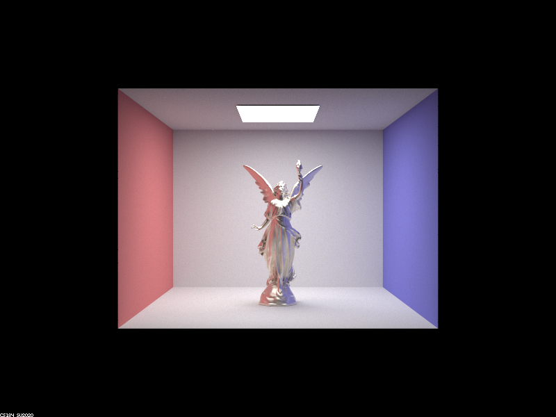
sky/CBlucy_ti.dae Titanium material with \(\alpha=0.3\) |
Part 3. Environment Lightl
Pick one.exr file to use for all subparts here. Include a converted .jpg of it in your website so we know what map you are using.
I used two environment maps to compare the effect of different extremes of lighting conditions. One has a fairly low contrast while the other is very bright for two small regions.

|
|
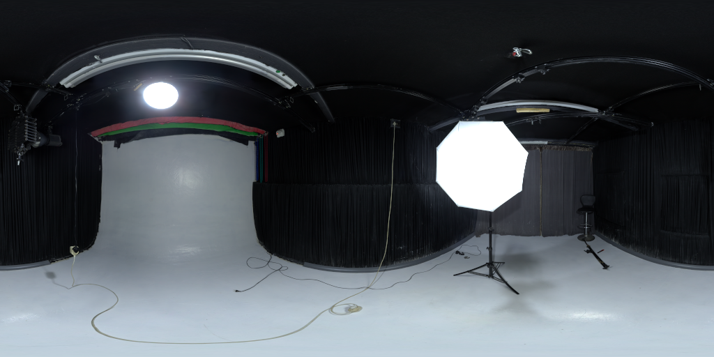
|
In a few sentences, explain the ideas behind environment lighting (i.e. why we do it/how it works).
Environment lighting allows for the recreation real world lighting on a rendered scene. It stores the radiance from far distances for each direction. Then, when rendering, any ray that goes off to infinity (hits far clipping plane) can use the radiance captured from the environment. This is very good for recreating nice looking lighting and even a background, without having to create geometry for it.
Show the probability_debug.png file for the .exr file you are using, generated using the save_probability_debug() helper function after initializing your probability distributions.
|
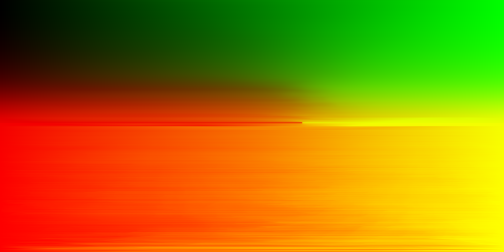
|
|
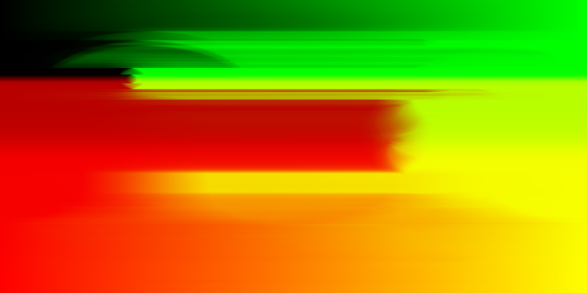
|
Use the bunny_unlit.dae scene and your environment map .exr file and render two pictures, one with uniform sampling and one with importance sampling. Use 4 samples per pixel and 64 samples per light in each. Compare noise levels. Make sure to include all screenshots.
sky/bunny_unlit.dae uniform hemisphere sampling |
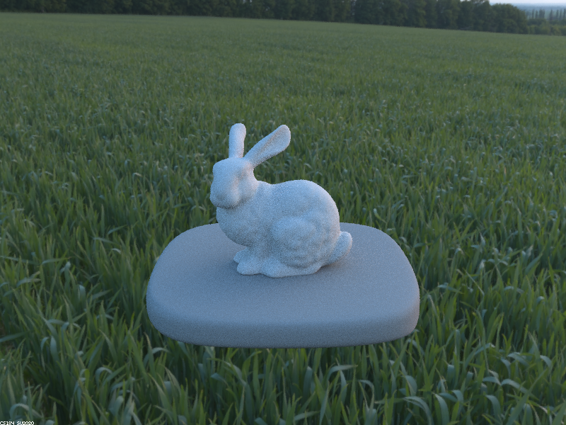
sky/bunny_unlit.dae importance sampling |
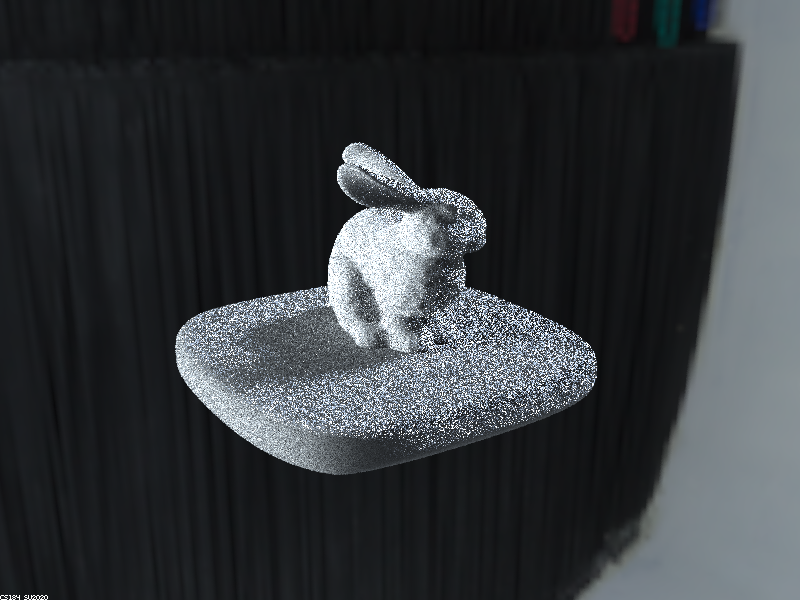
sky/bunny_unlit.dae uniform hemisphere sampling |
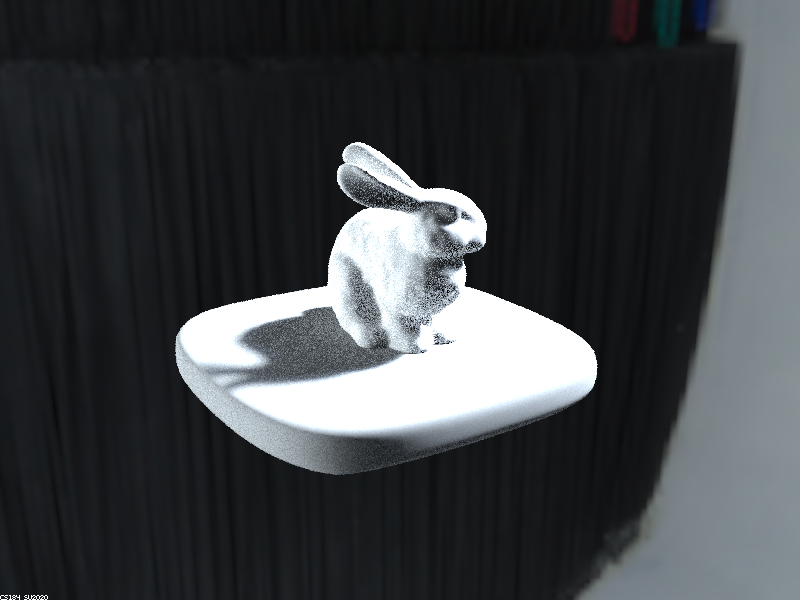
sky/bunny_unlit.dae importance sampling |
For the studio environment, the difference is huge. Importance sampling is way better. This is because a vast majority of the lighting comes from a few small regions of the environment. That causes most of the uniformly sampled rays to be much darker than average, so the variance is very high.
Use a different image (if you did part 2, we recommend bunny_microfacet_cu_unlit.dae) and your environment map .exr file and render two pictures, one with uniform sampling and one with importance sampling. Use 4 samples per pixel and 64 samples per light in each. Compare noise levels. Make sure to include all screenshots.
sky/bunny_microfacet_cu_unlit.dae uniform hemisphere sampling |
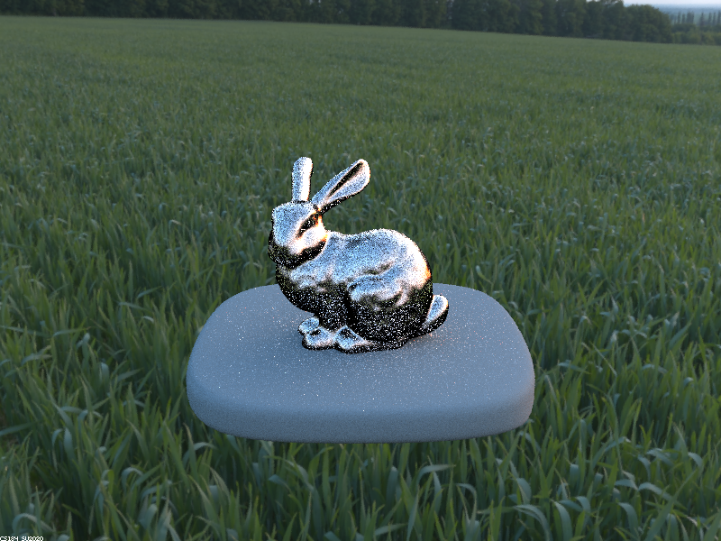
sky/bunny_microfacet_cu_unlit.dae importance sampling |
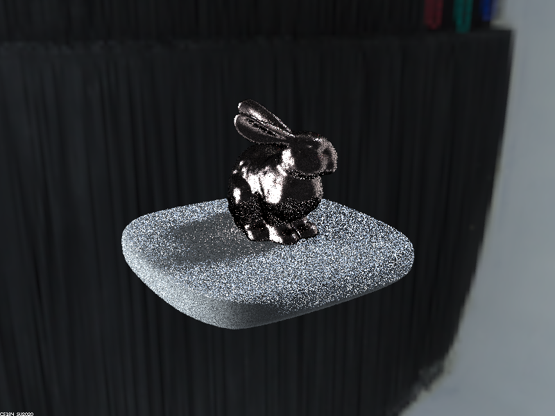
sky/bunny_microfacet_cu_unlit.dae uniform hemisphere sampling |
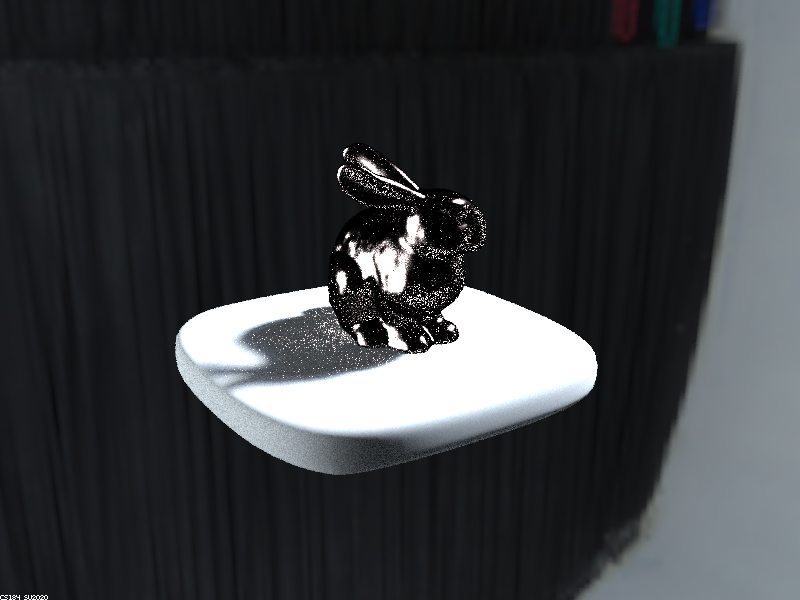
sky/bunny_microfacet_cu_unlit.dae importance sampling |
In the studio environment, the noise difference is more apparent. The the diffuse part is better, but the metal material has more noise with importance sampling. I believe this is because this camera angle has the lights to the right and left of the model. These angles are unlikely to reflect off of a microfacet surface from that angle into the camera, so they get canceled out by the BRDF.
Perhaps combining both importance sampling methods could fix this issue. It could sample the environment with two different schemes. One following the environment light and one following the microfacet. Then it could capture the bright parts of the environment and get the mirror-like reflections from shiny microfacet materials.
To make sure I implemented the sampling correctly, I plotted a small set of positions on the environment map that were sampled (vertical axis is flipped):
|
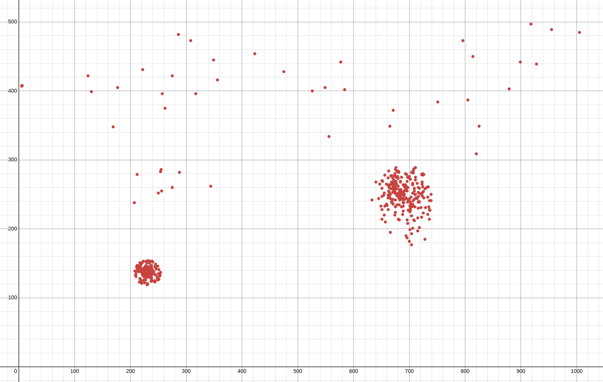
|
Part 4. Depth of Field
For these subparts, we recommend using a microfacet BRDF scene to show off the cool out of focus effects you can get with depth of field!In a few sentences, explain the differences between a pinhole camera model and a thin-lens camera model.
The pinhole model calculates rays traveling through a point from a plane to a plane. This means that each point on the screen/sensor will only capture rays coming in from the same direction.
The thin-lens model simulates a lens by using an approximation to create a range of possible ray direcitons to sample for each point on the screen/sensor.
The reference image on the asasignment page is no longer available, so I made a simple picture to help me when implementing the thin-lens. This shows several possible ray directions for a given point on the sensor.
The vertical line on the right is the sensor plane. The vertical line on the left is the plane of focus. The colorful lines are possible paths the light could go. The blue line in middle is the equivalent line for a pinhole camera.
The actual ray is traced from the lens, so the right segments of the traces are not used in the implementation.
|
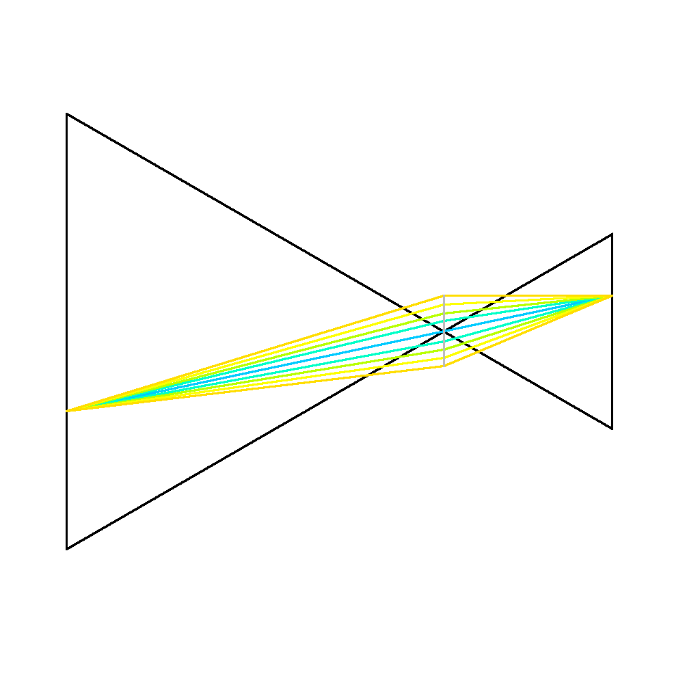
|
The thin-lens model takes the point that the pinhole model would find on the plane of focus and sends a ray from a random position on the lens to that point.
To implement this:
I started by finding the original pinhole direction in camera space (re-used code from 3-1).
Then I got the camera space point on the focal plane, \[ \left(\frac{-\text{focalDistance}}{d_z}\right)\vec{d} \] Then I sampled a random point on the lens with the given random input variables.
With these two points, I calculated the camera space ray direction, \[ p_\text{ focus} - p_\text{ lens} \] Then, I transformed this direction and the point on the lens to world space. After normalizing the final direction, I construct the ray originating at the world space sample point translated by the camera position.
In the following images, you can see that regions close to the plane of focus are clear, while the rest of the image is blurred.
For the varying lens radii, the smaller lens creates a larger range of focus. This makes sense because a smaller radius looks more like the pinhole model.
Show a "focus stack" where you focus at 4 visibly different depths through a scene. Make sure to include all screenshots.
For the following images, the lens radius is 0.01:
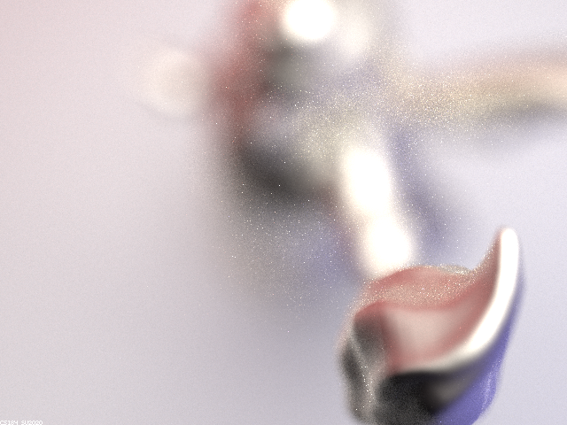
sky/CBlucy_ti.dae at focal distance 0.15 |
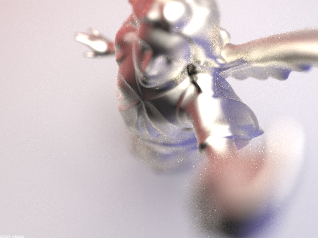
sky/CBlucy_ti.dae at focal distance 0.46 |
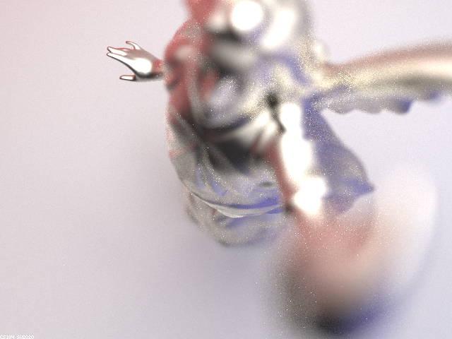
sky/CBlucy_ti.dae at focal distance 0.7 |
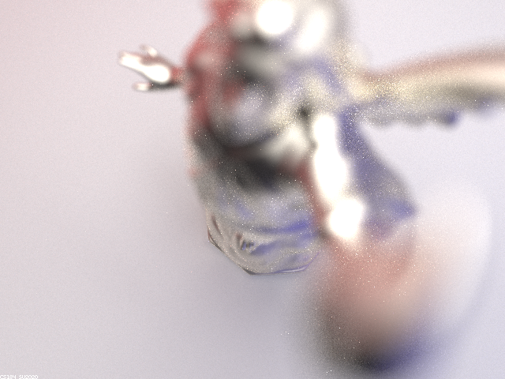
sky/CBlucy_ti.dae at focal distance 1.3 |
Show a sequence of 4 pictures with visibly different aperture sizes, all focused at the same point in a scene. Make sure to include all screenshots.
For the following images, the focal distance is 0.46:
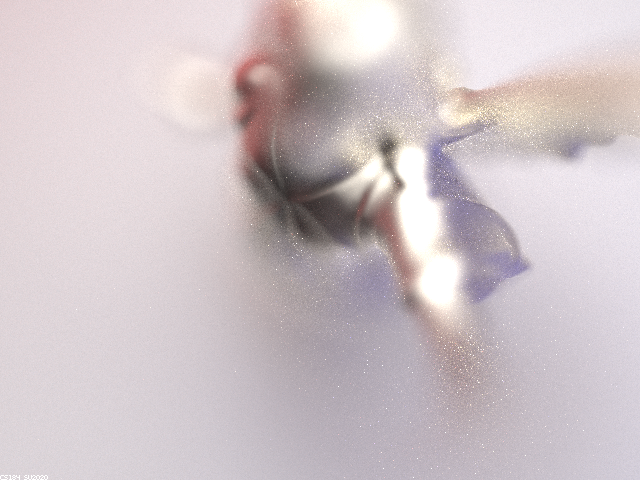
sky/CBlucy_ti.dae with lens radius 0.07 |
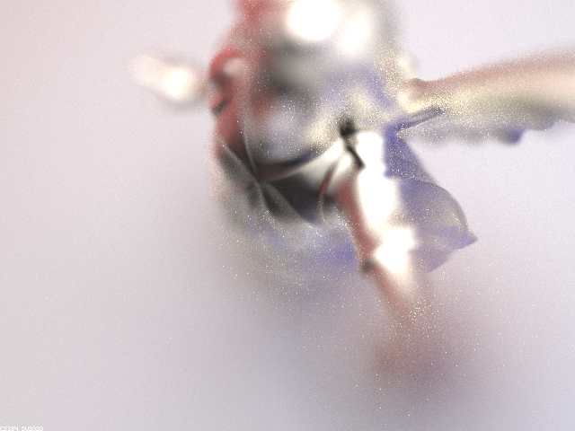
sky/CBlucy_ti.dae with lens radius 0.035 |
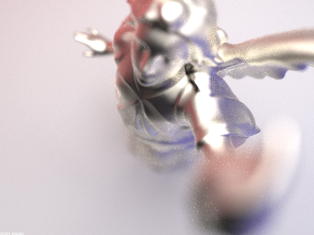
sky/CBlucy_ti.dae with lens radius 0.01 |
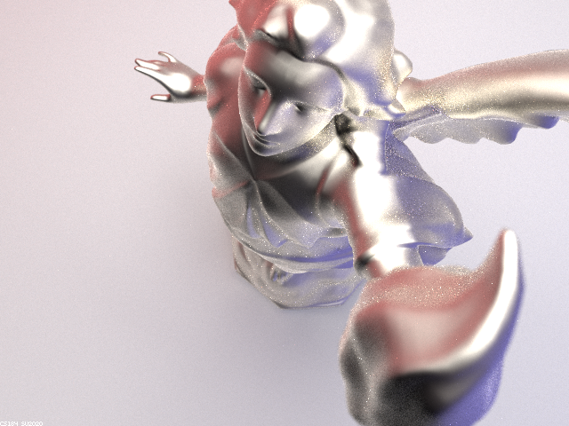
sky/CBlucy_ti.dae with lens radius 0.001 |